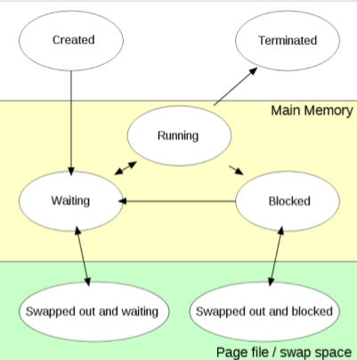
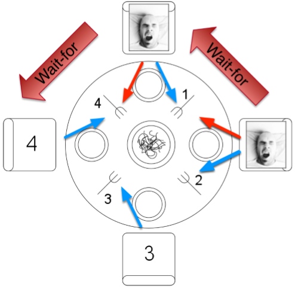

Indlejret Software Udvikling
Scroll down or hover over the course to see what topics you can read
about. These are the topics/subjects from the oral exam pdf.
The special while loop! You need to learn it!:
void logSystem::run(){
for (;;){
unsigned long id;
osapi::Message* msg = mq_receive(id);
handleMsg(id, msg);
delete msg;
}
}Programmming in relation to the OS and Kernel
Processes and threads
Processer
- En proces er et program, der kører på en computer, inklusiv den eksekverbare kode, data, ressourcer og den tilstandm det har under udførelsen.
- Processer er isolerede fra hinanden, hvilket betyder at en fejl i en proces ikke påvirker andre processer.
- Et par eksempler: En webbrowser, et tekstbehandlingsprogram, eller en baggrundstjeneste.
- Disse er alle sammen individuelle processer, og er ikke afhængige af hinanden.
Tråde
- En tråd er den mindste enhed af eskekvering inden for en proces.
- En proces kan godt have flere tråde, der kører samtidig og deler den samme hukommelse og ressourcer, som vi har set i vores øvelser.
- Fordelene ved tråde inkluderer muligheden for at udøre flere opgaver parallelt. Koden afvikles ikke fra top til bottom som normalt mere.
- Et eksempel på dette er en webbrowser der har en tråd der håndterer UI'en, og en anden tråd der indlæser websider.
Threading model
Der er forskellige trådmodeller, Single-threading, Multithreading, og Synchronization Mechanisms
Single-threading
- Her har hver enkel proces én enkelt tråd
- Det er simpelt at implementere men kan ikke udnytte multicore-processorer effektivt
- Et simpelt script er et eksempel på dette
Multithreading
- Hver proces kan have flere tråde
- Kan køre på flere CPU cores samtidig, som øger effektiviteten og ydeevnen
- Kræver synkronisering for at undgå konflikter, når trådene deler ressourcer
- Et eksempel kan være en webserver, der håndterer flere forespørgsler samtidig
Synchronization Mechanisms
- Mutexes: Brugt til at sikre, at kun én tråd ad gangen kan få adgang til en ressource
- Semaphores: Kan bruges til at styre adgangen til ressourcer, der tillader flere samtidige tråde
- Locks: Bruges til at kontrollere adgangen til delt date og forhindre race condictions
Process anatomy
En proces består af flere forskellige ting. Dette indebærer
stack, heap,
memory mapping og
Variabler og ELF (Datesegment og kodesegment).
Det er vigtigt at der er reserveret adresser til
Kernel space, da processer ville kunne bruge
nogle adresser som kernel space også vil bruge, hvis ikke der
var reserveret til dette.
Det er PCB'en (Process Control Block) der
indeholder oplysninger om processen, såsom dens tilstand,
programtæller, CPU-registre og hukommelsesstyring.
- Stack
- Bruges til lokal lagring og funktionskald
- LIFO (Last In First Out)
- Heap
- Dynamisk allokeret hukommelse
- "Free-store" (står der på slides, men hvad betyder det? 🖕)
-
August's bedste ven siger, at "free store" betyder at
programmøren har magten over dette, og kan selv bestemme
hvornår noget skal gemmes og slettes (allokere og
deallokere)
Altså man skal manuelt stå for denne del af hukommelsen - Denne frihed giver ansvaret til programmøren med at håndtere memory korrekt
-
With great power comes great responsibility
- Uncle Ben - Memory Mapping
- Virtual memory: OS giver en applikation en virtuel adresseplads, som kan oversættes til fysiske adresser via MMU (Memory Management Unit)
- Memory mapping bruger file mapping. Det kan bruges til at mappe en fil direkte ind i en proces' adresseplads
- Device Mapping: Enheder kan også loades ind i processens adresseplads, hvilket gør det muligt at interagere med enheden vha. almindelige hukommelsesoperationer.
- Shared Memory: Kan bruges til at dele hukommelse mellem flere processer, hvilket er nyttigt for IPC (Inter-Process Communication).
- Data- kodesegment
- Kode segmentet er også kendt som tekst segmentet og er den del af processens hukommelse, der indeholder den eksekverbare kode.
- Indeholder den kompilerede maskinkode af programmet
- Read-Only: Den er markeret som Read-Only for at undgå uønskede ændringer
- Data segmentet er delen af processen der indeholder globale og statiske variabler som er initialiseret at programmøren selv. Der er to dele af dette.
- Initialiseret Data segment
- Indeholder initialiserede globale og statiske variabler
- Denne del er skrivbar, i modsætning til kode segmentet, så programmet kan ændre på variablerne
- Uinitialiseret data segment
- Indeholder globale og statiske variabler, der er deklareret men ikke initialiseret af programmøren
- Disse variabler er typisk Zero-initialized af systemet når programmet starter op
- Er også skrivbar ligesom det initialiserede segment
Nu begynder vi
Vi bruger POSIX lib, som har typen
pthread. #include <pthread.h>
Funktioner i dette bibliotek som vi bruger inkluderer
- pthread_create()
- pthread_join()
- pthread_exit()
- pthread_*(m.m.)
Virtual Memory
Virtual memory er en teknik der anvendes af operativsystemer til
at udvide den tilgængelige hukkommelse ved are bruge både RAM og
diskplads. Et pare nøglebegreber inden for virtual memory er
Paging, og Segmentering.
Paging er hukommelsen der bliver opdelt i faste størrelser.
Disse opdelinger kaldes pages.
Segementering er hvor hukommelsen bliver opdelt i segmenter af
varierende størrelse baseret på logiske afsnit af programmet.
Men hvordan virker det så?
- Programmer bruger virtuelle adresser, som oversættes til fysiske adresser af MMU (Memory Managemant Unit)
- Page tables holder styr på hvor virtuelle sider er placeret i den fysiske hukkomelse eller på disken
- Deman paging indlæser kun sider i RAM, når det skal bruges, hvilket sparer på hukommelsen
- Swapping flytter data mellem RAM og disk, når der ikke er nok RAM til at indeholde alle aktive data
Nogle fordele med virtual memory er en øget effektivitet og
fleksibilitet, bedre beskyttelse og isolering af processer.
Der er også nogle ulemper. Det kan f.eks føre til langsommere
ydeevne, hvis systemet skal bytte data mellem disk og RAM ofte
Threads being executed on CPU, the associated scheduler & cache
Threads bliver mapped for execution af scheduler som bruger en af de 3 modeller User-level threading, Kernel-level threading eller Hybrid-level threading.
- User-level threading
- Er en simpel implementation som ikke har brug for kernel support
- Kan ikke håndtere multicores
- Single-threading
- Kernel-level threading
- Behøver thread awareness i kernel
- Effektiv ved brug af multicores
- Mapper direkte threads som scheduleren kan kontroller
- Hybrid-level threading
- En kompleks implementation der kombinere de to ovenstående metoder
- Kræver god koordination mellem user space og kernel space scheduler
- Ellers kan det skabe en mindre optimal løsning
Et begreb der kaldes Context switching bliver udøvet at OS, der suspendere den nuværende process for at fortsætte en anden process. Der er nogle generelle steps i dette
- Afbryd nuværende process
- Gem konteksten af den nuværende process (SP, PC, registre, ...)
- Gendan konteksten af næste proces
- Fortsæt eksekvering af næste proces
Der findes to former for context switching. Pre-emptive scheduling hvor processer kan blive afbrudt når som helst, og non-preemptive scheduling hvor processer frivilligt opgiver ressourcer til CPU'en. Linux supporter begge former.
Livscyklussen for en proces
- Waiting
- I kø for at kører på processeren
- Running
- Kører på processeren
- Blocked
- Venter på:
- Mutex
- Fil
- Forbindelse
- Swapped out
- Placeret på disken
Multithreaded systemer
Multithreaded systemer har nogle fordele og ulemper
- Fordele
- Prioterisering - Den højest prioriterede opgave får lov at køre
- Modulisering - Wrap concurrent activities in a task
- Ressource brug - Ikke brug CPU tid på at vente på I/O
- Ulemper
- Delt data
- Starvation
Lad os snakke lidt om disse ulemper.
Delt data (Shared data). Da threads deler data,
kan du risikere, hvis ikke du undgår det, at to threads tilgår
og ændrer på den samme variabel på samme tid. Dette kan
resultere i uforudsigelighed i dit program da du ikke ved med
sikkerhed hvad variablen er hvornår. Dette kan også ændre sig
for hver gang programmet kører.
Starvation. Har du et bestemt interval dine
tasks skal køre på, kan for mange tasks resultere i starvation,
hvor en eller flere ikke bliver udført. Det er et problem i
hvilket som helst prioritets baseret system. Sker når dit
"schedule-vindue" er for lille så dine lav-prioritets opgaver
ikke når at blive udført pga. højere prioritets opgaver bliver
udført i hele vinduet. Det kan være svært at forudsige og kan i
visse tilfælde kun ske i meget specielle situationer.
Synchronization and protection
Data integrity - Concurrency challenge
Vi havde jo et problem med shared data. Når vi ville lave et program med flere threads kan vi støde på det problem at data kan blive tilgået og ændret på samme tid af forskellige threads hvilket resulterer i uforudsigelighed i dit program. Det kan vi undgå med locks. Til det skal vi bruge mutexes. Når vi har låst et mutex, kan flere ikke tilgå det "lånte" data. Når vi så er færdige med at bruge den data, låser vi vores mutex op igen. Et eksempel kan ses herunder:
unsigned int shared;
Mutex m = MUTEX_INITIALIZER;
void threadFunc(){
for (;;){
lock(m);
shared++;
unlock(m);
sleep(ONE_SECOND);
}
}
main(){
createThread(threadFunc);
createThread(threadFunc);
for(;;) sleep(100);
}Altså løsningen på problemet med delt data, er Mutexes, eller Semaphores. Her låser du din mutex eller semaphore inden du arbejder på data. Inde i det låste "vindue" kan du arbejde med din data, og når du er færdig, låser du op for denne mutex eller semaphore igen. Det er vigtigt at huske, at det her er programmørens ansvar at bruge mutexes/semaphores ordentligt og låse og oplåse på de rigtige tidspunkter. Din compiler vil ikke hjælpe dig. ChatGPT kan måske, men ellers er der ingen hjælp.
Mutex & Sephamores
Mutexes står for MUTual EXclusion, og er ejet f en thread ad gangen, hvilket sikrer at kun en handling kan gøres ad gangen. Mutexes bruger to funktioner: lock(m) og unlock(m).
Semaphores bliver brugt til at signalere, men kan også bruges til mutual exclusion. Modsat mutexes er en semaphore ikke eget af en thread ad gangen, så "alle" kan release en sephamore. De to operationer på en semaphore er take(s) og release(s).
Mutex & Conditionals
Conditionals er en form for signaling mechanism. Vi har en receiver/waiter og en sender/indicator. Receiver/waiter, venter på en conditional variabel, og en sender/indicator signalerer et partikulært condition variabel på et tidspunkt. Du skal definere en mutex, condition og et signal flag. Et lille eksempel kan ses herunder:
Mutex m;
Condition c;
bool waitingFor = false;
void theWaiter(){
lock(m);
while(!waitingFor){
condWait(c, m);
}
waitingFor = false;
unlock(m);
}
void theIndicator(){
lock(m);
waitingFor = true;
condSignal(c);
unlock(m);
}I denne kode, har vi et loop i waiter funktionen. I dette loop, venter vi på et signal med condWait(), det gør at låsen bliver unlocked og når denne condition kommer,
bliver låsen taget igen, så vi kan gøre hvad vi vil, og derefter låse op til sidst. Det betyder at du ikke længere blokerer med din lock, så længe du venter på et signal
med condWait.
Signaler funktionen kan tage låsen når waiter funktionen venter på en condition, og gør sin ting før den signalerer at nu må en anden bruge den, og derefter låser op for vores mutex.
Man kan se mere om dette fra slide 21 i Thread Synchronization II. Det omhandler Park-A-Lot 2000.
Denne form for synkronisering gør det muligt at sikre dit program, så du ikke "håber" at det virker, men ved at det virker.
forskellige synkroniserings metoder inkluderer:
- Mutex: s=0 eller s=1, hører til 1 thread ad gangen
- Conditionals: Singalerings metode brugt sammen med mutex
- Read/writeable locks: Flere readers, ekslusiv writer
- Counting semaphore: s≤0, delt mellem tråde
- Binary semaphore: s=0 eller s=1, delt mellem tråde
Forskellige synkroniserings mekanismer:
#include <pthread.h>
- int pthread_mutex_init(pthread_mutex_t* mutex, pthread_mutex_attr_t *mutexattr)
- int pthread_mutex_lock(pthread_mutex_t* mutex)
- int pthread_mutex_unlock(pthread_mutex_t* mutex)
- int pthread_mutex_destroy(pthread_mutex_t* mutex)
- int pthread_rwlock_init(pthread_rwlock_t* mutex, pthread_rwlockattr_t *mutexattr)
- pthread_rwlock_rdlock(pthread_rwlock_t* mutex)
- pthread_rwlock_wrlock(pthread_rwlock_t* mutex)
- pthread_rwlock_unlock(pthread_rwlock_t* mutex)
- pthread_rwlock_destroy(pthread_rwlock_t* mutex)
- int pthread_cond_init(pthread_cond_t* cond, const pthread_contattr_t *attr)
- int pthread_cond_wait(pthread_cond_t* cond, pthread_mutex_t* mutex)
- int pthread_cond_signal(pthread_cond_t* cond)
- int pthread_cond_broadcast(pthread_cond_t* cond)
- int pthread_cond_destroy(pthread_cond_t* cond)
#include <semaphore.h>
- int sem_init(sem_t* sem, int pshared, unsigned int value)
- int sem_destroy(sem_t* sem)
- int sem_wait(sem_t* sem)
- int sem_post(sem_t* sem)
På sidste slide står der at vi skal lære RAII (Resource Acquisition Is Initialization) som vi gennemgår lidt længere nede.
Producer / Consumer problem
En producer putter ting ind i en buffer, og en user tager ting fra en buffer. Men hvad sker der når en producer prøver at putte ind i en fyldt buffer, eller hvis en user prøver at tage fra en tom buffer? Vi har et eksempel fra slides, der bruger semaphores kan ses herunder: (Forklaring kommer bagefter).
class Buffer{
public:
Buffer(size_t bufferSize) :
buffer_(new uint8_t[bufferSize]),
bufferSize_(bufferSize),
insert_(0), remove_(0){
emptySlotsLeftSem =
createCountingSem(bufferSuize_);
usedSlotsLeftSem =
createCountingSem(0);
}
void put(uint8_t x){
take(emptySlotsLeftSem);
buffer[insert_] = x;
insert_ = (insert_+1)%bufferSize_
// hvorfor bruger du modulus bufferSize_
release(usedSlotsLeftSem);
}
uint8_t get(){
take(usedSlotsLeftSem);
uint8_t tmp = buffer_[remove_];
remove_ = (remove_+1)%bufferSize_;
// hvorfor bruger du modulus bufferSize_?
release(emptySlotsLeftSem);
}
private:
uint8_t buffer;
size_t bufferSize_, insert_, remove_;
SEM_ID emptySlotsLeftSem;
SEM_ID usedSlotsLeftSem;
}
Her starter vi med at vi har to semaphores, én for empy slots og
én for used slots. put() tilføjer en uint8_t
ved at tage en semaphore fra empty slots, og derefter releaser
en til used slots. get() tager en semaphore fra
used slots og releaser en til empty slots.
Grunden til vi bruger modulus, er så vi ikke kommer over bufferSize.
Hvis remove_ eller insert_ bliver større end bufferSize, bliver den kun ændret til
at bliver det nummer større end bufferSize, så vi ikke kommer ud af range for vores buffer.
Det kan dog resultere i at, hvis ikke der bliver taget med get() ofte nok, kan data blive overskrevet.
Dead locks
Dead locks er en Pain in the ass! Det er en situation, hvor du aldrig kan afvikle dit program, og det kan ske når du bruger mutexes.
Det sker hvis to eller flere threads venter på at en ressource bliver tilgængelig fra den anden thread for at kunne køre.
Men den ressource bliver aldrig tilgængelig.
Det tager os videre til et kendt eksempel, kaldet The Dining philosophers, som er et eksempel på Dead locks
Dining philosophers
Kan også kaldes for The dining idiots går ud på dette:
- En filosof tager højre og venstre gaffel op, spiser og lægger venstre og højre gaffel på bordet og tænker:
- Hvis en gaffel er taget, skal filosoffen vente på at den er klar
De sidder fire filosoffer/idioter rundt om et bord. Der er fire gafler. Én på hver side af hver filosof. Den første tager venstre, næste tager også venstre osv. indtil allehar taget
venstre gaffel.
Så vil den første filosof gerne tage højre gaffel, men fordi filosoffen til højre for ham har taget sin venstre gaffel, er den første filosofs højre gaffel ikke tilgængelig, og han må derfor vente
på at den bliver ledig. Dette sker for alle filosofferne, og vi kan derfor ikke komme videre, da alle venter på deres højre gaffel, som ingen vil give.
En løsning kunne være at hver anden filosof tog deres venstre gaffel først og de andre to tog deres højre gaffel først. Det vil resultere i at kun en filosof kan spise ad gangen, og en anden kan vente på sin anden gaffel, mens de to sidste venter på deres første gaffel. Her undgår vi en deadlock, og spisningen kan afvikles. En visualisering kan ses herunder og kan læses mere om på
De blå pile er hvad der først blev taget. De røde pile viser hvad der prøves på at blive taget, men fejler, fordi gaflen allerede er taget af en anden.
Thread communication
The challenges performing intra-process communication
Kommunikations design udfordringer som der bliver forelagt i slides indebærer
- Individuelle tråde venter på en condition skal blive true
- At gå ind og ud af kritiske sektioner ved brug af mutexes eller semaphores
- Kan ske flere gange i en thread loop iteration
- Kan reservere flere ressourcer som skal synkroniseres mellem tråde
- Sekvensen hvor ressourcer bliver taget skal tænkes igennem
En lille opsummering af dette:
- Et design der sikrer at der ikke sker deadlocks eller timing problemer
- Læsbarhed bliver hurtigt et problem også
- Høj kompleksitet af koden som et resultat
Til dette vil vi gerne have events/messages, for at vi kan lave en opgave når en condition bliver sat til true.
Ved event driven programming bliver hver message håndteret af en specifik handler. Altså en specifik funktion bliver kaldt når vi modtager et specifikt event.
Her kan vi have to forskellige inputs:
- Sensor input
- Temperatur oversteget besked → skru ned for varmen
- Bil registreret → Åben garage dør
- Signal input
- Exit knap i GUI → luk program
Med andre ord kan man skrive det som: event = Message. Og dette kan ses som en proces med to faser
- Acquire/select new message
- Håndteret af en Message Queue (MQ) og sikrer at et antal af beskeder kan være i "kø" ad gangen
- Process new message in handler
- Håndteret ved at lave en case til en specifik Message
Message queue
Message Queue er den kø hvor beskederne kommer. For at gennemgå denne vender vi tilbage til Producer og consumer problemet, hvor en producer putter ind i en kø og consumer modtager fra givne kø.
Vi kan have flere producers og en consumer, som håndterer de forskellige beskeder i vores message queue MsgQueue. Et par ekstra kriterier for denne er:
- Hvis den modtagende kø er fuld, må tråden der ønsker at overføre kontrol og/eller data blokere og vente på mere plads
- Der er et max antal af elementer i køen
- Den modtagende tråd må blokere når den modtager fra en tom kø
- Blokeringer skal ikke laves med polling (sleeps)
- Hvad skal vi gøre når vi ikke må bruge sleep? → Conditionals